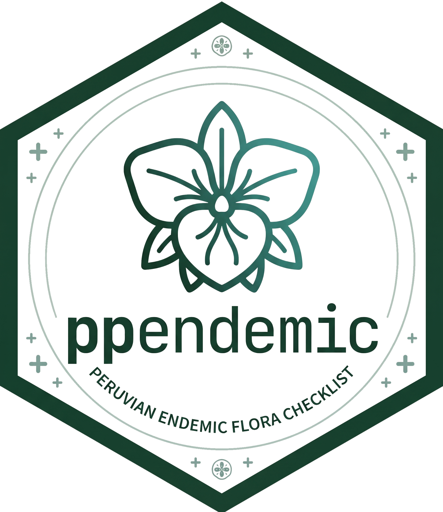
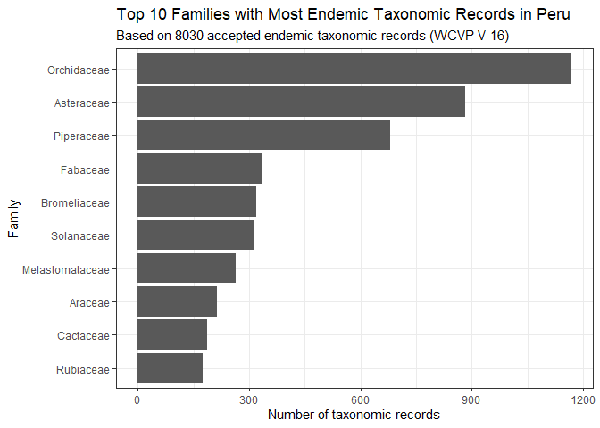

ppendemic 
Overview
ppendemic provides access to accepted endemic plant taxonomic records from Peru. The current dataset, ppendemic_tab16, contains 8030 records from WCVP V-16, including taxa at species and infraspecific ranks.
The package is useful for:
- exploring the taxonomic composition of Peru’s endemic flora;
- checking whether a submitted plant name is listed as endemic;
- comparing successive WCVP-derived versions of the endemic checklist; and
- inspecting bibliographic metadata, including actual and nominal publication years.
Because the database includes infraspecific taxa, the number of rows must not be interpreted as the number of distinct species.
What Is Included
The datasets include accepted endemic taxa with:
- accepted taxon name and taxonomic status;
- family, genus, specific epithet, infraspecific rank and infraspecific epithet;
- taxon authorship and publication metadata;
- actual and nominal publication years; and
- dataset version and extraction date.
The datasets do not include coordinates, departments, elevation, habitat, threat categories, or fine-scale distribution records. Geographic hotspot, conservation-priority, or range-size analyses require joining ppendemic with external occurrence or conservation datasets.
Datasets
| dataset | wcvp_version | extraction_date | records | families | genera |
|---|---|---|---|---|---|
| ppendemic_tab14 | V-14 | 28-05-2025 | 7898 | 165 | 1116 |
| ppendemic_tab15 | V-15 | 06-01-2026 | 7892 | 165 | 1115 |
| ppendemic_tab16 | V-16 | 04-06-2026 | 8030 | 165 | 1121 |
ppendemic_tab16 is the latest dataset and should be used by default unless a reproducible analysis requires an older WCVP version.
The latest version expands the previously known list of 5,507 species presented in the Red Book of Endemic Plants of Peru to 8030 accepted taxonomic records. These records span 165 families; the most record-rich families are Orchidaceae, Asteraceae, Piperaceae, Fabaceae, Bromeliaceae, Solanaceae, Melastomataceae, Araceae, Cactaceae, Rubiaceae.

Installation
Install the CRAN release:
install.packages("ppendemic")Or install the development version from GitHub:
pak::pak("PaulESantos/ppendemic")Getting Started
library(ppendemic)
#> ── Access Peruvian plant endemic data ─────────────────────── ppendemic 0.2.2 ──Access the latest dataset directly:
data("ppendemic_tab16")
dplyr::glimpse(ppendemic_tab16)
#> Rows: 8,030
#> Columns: 18
#> $ taxon_name <chr> "Varronia lippioides", "Varronia munda", "Varroni…
#> $ taxon_status <chr> "Accepted", "Accepted", "Accepted", "Accepted", "…
#> $ family <chr> "Boraginaceae", "Boraginaceae", "Boraginaceae", "…
#> $ Genus <chr> "Varronia", "Varronia", "Varronia", "Adelonema", …
#> $ Species <chr> "lippioides", "munda", "vargasii", "orientale", "…
#> $ infraspecific_rank <chr> NA, NA, NA, NA, NA, NA, NA, NA, NA, NA, NA, NA, N…
#> $ infraspecies <chr> NA, NA, NA, NA, NA, NA, NA, NA, NA, NA, NA, NA, N…
#> $ taxon_authors <chr> "(I.M.Johnst.) J.S.Mill.", "(I.M.Johnst.) J.S.Mil…
#> $ primary_author <chr> "J.S.Mill.", "J.S.Mill.", "J.S.Mill.", "Croat", "…
#> $ place_of_publication <chr> "Brittonia", "Brittonia", "Brittonia", "Syst. Bot…
#> $ volume_and_page <chr> " 65: 342", " 65: 343", " 65: 343", " 41: 39", " …
#> $ first_published <chr> "(2013)", "(2013)", "(2013)", "(2016)", "(2016)",…
#> $ year_actual <dbl> 2013, 2013, 2013, 2016, 2016, 1991, 2016, 2015, 2…
#> $ year_nominal <dbl> 2013, 2013, 2013, 2016, 2016, 1991, 2016, 2015, 2…
#> $ both_years <chr> "2013", "2013", "2013", "2016", "2016", "1991", "…
#> $ has_different_years <lgl> FALSE, FALSE, FALSE, FALSE, FALSE, FALSE, FALSE, …
#> $ version <chr> "V-16", "V-16", "V-16", "V-16", "V-16", "V-16", "…
#> $ version_date <chr> "04-06-2026", "04-06-2026", "04-06-2026", "04-06-…Count records by family:
ppendemic_tab16 |>
dplyr::count(family, sort = TRUE)
#> # A tibble: 165 × 2
#> family n
#> <chr> <int>
#> 1 Orchidaceae 1168
#> 2 Asteraceae 883
#> 3 Piperaceae 680
#> 4 Fabaceae 334
#> 5 Bromeliaceae 319
#> 6 Solanaceae 314
#> 7 Melastomataceae 263
#> 8 Araceae 214
#> 9 Cactaceae 188
#> 10 Rubiaceae 176
#> # ℹ 155 more rowsCheck Endemism
Use is_ppendemic() to check whether submitted names are listed as endemic:
splist <- c(
"Aa aurantiaca",
"Aa aurantiaaia",
"Werneria nubigena",
"Dasyphyllum brasiliense var. barnadesioides",
"Miconia firma",
"Festuca densiflora"
)
is_ppendemic(splist)
#> [1] "Endemic" "Endemic" "Not endemic" "Endemic" "Endemic"
#> [6] "Endemic"The matching engine uses exact and fuzzy matching. The max_dist argument controls fuzzy tolerance:
is_ppendemic("Aa aurantiaaia", max_dist = 0)
#> [1] "Not endemic"
is_ppendemic("Aa aurantiaaia", max_dist = 2)
#> [1] "Endemic"Indeterminate names such as sp. and spp. are treated as genus-level records and are not classified as endemic taxa:
is_ppendemic(c("Piper sp.", "Piper spp."))
#> [1] "Not endemic" "Not endemic"is_ppendemic() can also be used inside tabular workflows:
tibble::tibble(splist = splist) |>
dplyr::mutate(endemic = is_ppendemic(splist))
#> # A tibble: 6 × 2
#> splist endemic
#> <chr> <chr>
#> 1 Aa aurantiaca Endemic
#> 2 Aa aurantiaaia Endemic
#> 3 Werneria nubigena Not endemic
#> 4 Dasyphyllum brasiliense var. barnadesioides Endemic
#> 5 Miconia firma Endemic
#> 6 Festuca densiflora EndemicFor detailed matching diagnostics, use matching_ppendemic():
matching_ppendemic(splist) |>
dplyr::select(Orig.Name, Matched.Name, Endemic.Tag, matched)
#> Orig.Name
#> 1 Aa aurantiaca
#> 2 Aa aurantiaaia
#> 3 Werneria nubigena
#> 4 Dasyphyllum brasiliense var. barnadesioides
#> 5 Miconia firma
#> 6 Festuca densiflora
#> Matched.Name Endemic.Tag matched
#> 1 Aa aurantiaca Endemic TRUE
#> 2 Aa aurantiaca Endemic TRUE
#> 3 Werneria Not endemic FALSE
#> 4 Dasyphyllum brasiliense var. barnadesioides Endemic TRUE
#> 5 Miconia firma Endemic TRUE
#> 6 Festuca densiflora Endemic TRUECompare Versions
The package includes a vignette for comparing inclusions, exclusions, and possible nomenclatural replacements across dataset versions:
vignette("cambios-entre-versiones", package = "ppendemic")